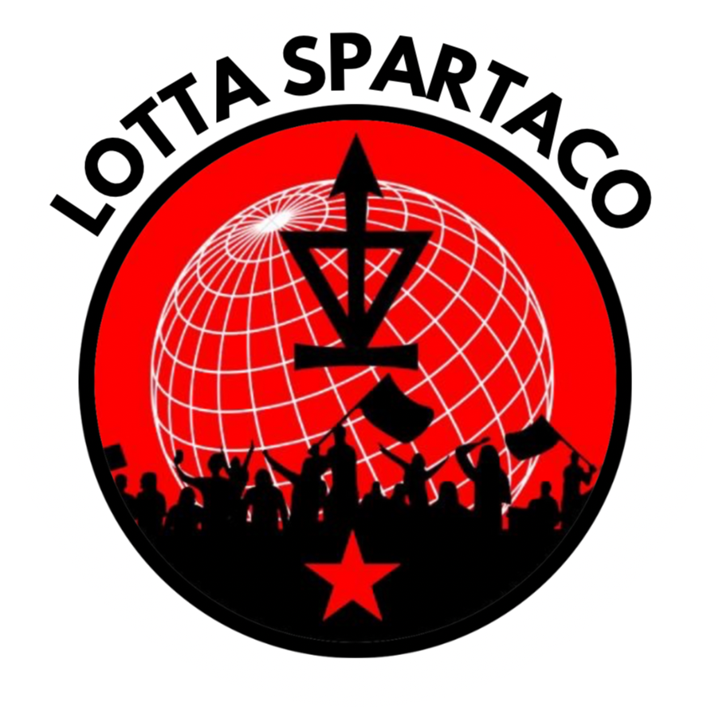

Chi Siamo
Lotta Spartaco
Lotta Spartaco nasce a Catania con l'intenzione di creare un'alternativa concreta e radicale nel panorama della politica studentesca e cittadina in opposizione all'attuale panorama politico, dominato da dinamiche gerarchiche e tossiche che hanno frammentato il potenziale rivoluzionario della città, soffocando la cooperazione tra le forze d'opposizione.
Lotta Spartaco nasce quindi anche come ambiente di scambio, di collaborazione e di organizzazione delle realtà politiche opposte e contrarie all'attuale sistema oppressivo. In un contesto dove le forze parlamentari, liberali, riformiste e i loro servili alleati si sono appropriati dei mezzi di lotta e dominano il panorama politico, riducendo la conflittualità sociale a un teatro sterile e manipolato.
Lotta Spartaco si pone l'obiettivo di abbattere il muro del silenzio, unendo settori sociali frammentati (studenti medi, universitari e lavoratori) sotto un'unica bandiera: quella della lotta di classe contro il capitale e i suoi servi.
La figura di Spartaco, leader e simbolo della ribellione degli schiavi contro il potere imperiale di Roma, rappresenta per noi il simbolo eterno della resistenza collettiva contro l'oppressione. Così come Spartaco non accettò di piegarsi al destino imposto dai padroni, anche noi non accettiamo il sistema economico e sociale che sfrutta e disumanizza, giustificando il sacrificio di milioni di innocenti sull'altare del potere e del profitto. La resistenza è il nostro filo conduttore, in ogni sua forma: nelle fabbriche e nelle scuole come nelle strade.
Lotta Spartaco crede che solo attraverso un'azione congiunta e unitaria da parte di tutti i settori della società, profondamente radicata nella teoria e nella prassi, si possa creare un'alternativa reale all'immobilismo e alla staticità che oggi domina la lotta politica in tutte le sue forme. Rifiutiamo totalmente le politiche identitarie, che non fanno altro che segmentare il corpo sociale e disgregare la forza unitaria delle masse studentesche e cittadine, e ci opponiamo con forza alla cosiddetta "lotta culturale", nient'altro che uno strumento di distrazione del sistema, nonché prodotto tossico del liberalismo che sottrae attenzione dalla vera lotta fondamentale: quella contro il capitalismo, l'unica intrinsecamente intersezionale e sistematica.